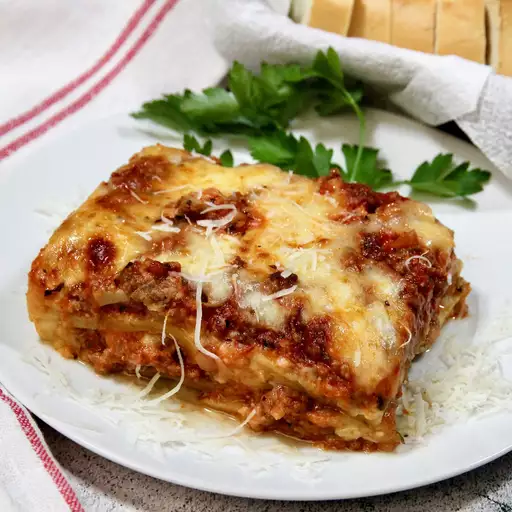

Lasagna

Description
Lasagna is a classic Italian dish consisting of layers of wide, flat pasta
sheets alternated with rich meat or vegetable sauce, creamy béchamel or
ricotta, and a generous topping of melted cheese. It's baked to
perfection, creating a hearty and comforting meal with a perfect balance
of flavors and textures. This beloved dish is often enjoyed as a
satisfying main course.
Ingredients
Meat Sauce:
- 1 lb ground beef
- 1 lb ground pork or Italian sausage
- 1 large onion, chopped
- 3 cloves garlic, minced
- 2 cans (15 oz each) tomato sauce
- 2 cans (6 oz each) tomato paste
- 1 can (15 oz) diced tomatoes
- 1/2 cup water
- 2 tablespoons sugar
- 2 teaspoons dried basil
- 1 teaspoon Italian seasoning
- 1 teaspoon salt
- 1/2 teaspoon black pepper
- 1/4 cup chopped fresh parsley
Cheese Mixture:
- 15 oz ricotta cheese
- 1 egg
- 1/2 teaspoon salt
- 2 tablespoons chopped fresh parsley
Assembly:
- 12 lasagna noodles
- 16 oz shredded mozzarella cheese
- 1 cup grated Parmesan cheese
Steps
-
Meat Sauce: Cook beef, pork/sausage, and onion until
browned. Add garlic, tomato sauce, paste, diced tomatoes, water, sugar,
basil, Italian seasoning, salt, pepper, and parsley. Simmer 30 mins.
-
Cheese Mixture: Combine ricotta, egg, salt, and
parsley.
-
Noodles: Cook noodles according to package
instructions.
-
Assemble: Preheat oven to 375°F (190°C). Layer sauce,
noodles, ricotta mixture, mozzarella, and Parmesan in a 9x13-inch baking
dish, repeating layers.
-
Bake: Cover with foil and bake 25 mins. Uncover and
bake another 25 mins until bubbly and golden brown.
- Serve: Let stand 10-15 mins before serving.